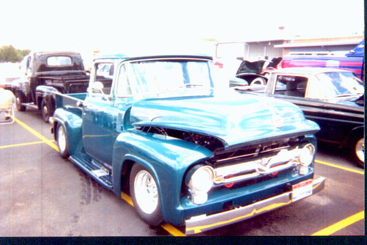

FAT FENDERS
FLYERAUGUST 2000
The meeting came to order on August 19, 2000 at 2:28 PM in Jeff Burnett’s garage in Caledonia, WI.
Officers present: Mike Sonn, President
Todd Showers, Treasurer
Treasurers’ report:
Todd reported a balance of and passed around the last 30 days of transactions for the members present to see.
Membership report: No new members
Newsletter Editor report: report made via email - 70 newsletters (hard copy) mailed and 20 sent using e-mail. Only one problem was reported. Good job Bob K. and thanks to those whom offered assistance to resolve the e-mail problem.
Old Business
Club tee-shirts:
Tee-shirts- Dave Farmer reported the total cost for the tee-shirts (made) is $291.90. Dave said they would be at the Dells.
Dash 11
Mike Connor reminded everyone we’ve passed the early registration dead line and the price has gone up $5 for registration. There are 4 rooms still available at the Copa that need to be rented by September 1, 2000, or we will not get the low rate.
The rooms still available are: Rooms 620 & 623 have 1 queen bed and a queen hideaway. Rooms 720 & 827 have 2 double beds. Make your reservations before September 1, 2000. Ask for Sue Eck, as Heather no longer works there. Remember to mention that you are from Badgerland F-100 Truck Club to get the discount. There are plenty of rooms still available.
Awards:
Thanks to Dave Farmer for making the long distance award. Mike Connor motioned we should give a $25 cash award along with the long distance trophy. Dave Farmer seconded the motion. The motion carried.
Mike Connor also said they were short on door prizes. Todd Showers motioned to give the chairman of the show $200 if we do not have enough for the show. Dale Barrette seconded the motion. The motion carried.
We need more trophies. Please contact Paul Zein.
Games and stuff:
We are looking for the nametag clips, and the kids’ game where you pin the license plate on the truck. If you know who has them, please contact Mike Connor.
Food:
Chris Connor reported we are having hot beef and cold turkey sandwiches.
Reminder to all members: Please bring a dessert, in a disposable container! Mike Connor is requesting that all of the officers serve the food. If anyone else would like to help, your assistance would be appreciated.
Mike Connor reported we have 56 trucks registered for the show, as of August 19th.
We still need a couple of volunteers to fill in the open spots. See the spreadsheet (located elsewhere in this issue) for what positions need your support. If you received an email copy of the newsletter, look for an attachment to open.
Shirts:
A motion was made by Dale Barrette to make the sweatshirts with the Ford oval logo on the front and a truck on the back, and $40 given to Dave Farmer for the printing. Mike Connor seconded the motion. Motion carried. Three dozen will be ordered - 24 XL and 12 XXL.
New Business
Christmas Party-
Christmas party will be February 3rd at the Prime Quarter in Madison, if the date is still available.
Fellow Trucker Injured-
Richard Wright, who has attended a lot of our shows, has fallen off the roof of his house and has broken several bones. Consequently he will not be able to work on his hobby of re-doing trucks. He has the following for sale:
‘55 1 ton complete dually flatbed $4,000
‘54 panel with a 360 standard $1500
‘55 panel 4 x 4 with a 429, C6 $3500
‘53 1 ton 5th wheel 360 4 speed $3500
‘59 MGA $2000 or best offer
If you are interested in any of the vehicles, please contact Judy Wright at 715-849-8992.
If you would like to visit or send a card to Richard, he is at:
Mt. View Care Center
2400 Marshall St.
Wausau, WI 54403
Room 1203
Theresa Sonn motioned to make a donation box for Richard Wright and take it to the Dash to the Dells. Dave Farmer seconded the motion. The motion carried.
Upcoming meetings
October 15th at Don and Laurie Guthrie’s home in Argyle, WI.
November will be at Floyd and Rita Johnsons’ in Chaseburg, WI.
Correction to the meeting at Scott and Nola Jackson’s home. It will be on June 16, 2001
Meeting adjourned at 3:24pm.
Minutes by Shari (almost) Showers
See you at the Dash to the Dells, September 15th and 16th
CLASSIFIED ADS
Parts for Sale
* Pair of rust free ’61-’66 doors complete $175 Greg Masters 815-796-2225
* Fairlane fiberglass front fenders for ’53-’56 F100. Never been installed $350/pair
Greg Masters 815-796-2225 6/00
* The following ’53 F-100 truck parts are offered by Paul Zien @ 262-279-5466 all for $600
6/002 cabs, 2 hoods, 1 box, 6 doors, 1 ’55 grille and lower valance, 1 frame bare (no suspension parts) and 1 frame with ’77 Nova front stub and Dana 44 rear end, chopped cab roof.
Wanted
* Drivers door ’56 F-series, ’55 F-100 window glass, ’55 F-100 front fenders
Floyd Johnson 608-483-2594 or
fjohnson@mwt.net 5/00* ’73 – ’75 F100 Ranger XLT long bed
Jerome Hofhenke 15860 228th Ave. Elk River, MN 55330
*
Any info. On conversion company in 1954 that made a 3 door crew cab (it’s a F350 w/bed)Rick Yarger Week days 309-852-0713 Fax 309-853-2010
* Steering box and Pitman arm for ’53 F100. Also looking for all pieces of glass for cab.
Bob Everton 815-439-1431
6/00

Bob Ward of Greenfield, WI. ’56 F100 is shown of the back of the newsletter.
CLASSIFIED ADS
Trucks For Sale
* '53 F100
, 302 w/ C6 tranny, brand new interior, '72 Nova clip WFD brakes, new MP master cyl.,American Wiring System, Vintage Air Heat/Defrost, Stewart Warner gauges, Aiwa stereo CD
player w/Sony speakers, new glass, exhaust system by Midas, Oak bed & running boards.
Painted in Corvette yellow with tan interior. Runs and drives great.
Asking $12,500 John Lunn 608-868-6227 7/00
* ‘51 F2 pickup Partial restoration. Needs minor carb work 47K original miles Flathead six 4 spd
new running boards, interior panels and paint $5500 OBO can be driven
call 608-277-1212 days, 608-835-1555 eves 5/00
* ’63 F100
shortbed, 302 eng., auto tranny, 8" rear end, Volare IFS, P.S., disc brakes, Alum.wheels. Cab floor has been patched and new cab mounts have been installed. Includes an extra pair of doors. $2000 Greg Masters 815-796-2225 6/00
* ’63 F100 Unibody long bed, 351 eng., auto tranny, Volare IFS, 8.8" rear end, Air conditioning,
tan interior and bed cover. Drive it home.
$10,000 Rick Yarger 309-853-2010 (weekdays) fax 309-852-0713 6/00
Contact Daryl Fedkenheuer regarding the following 3 vehicles 608-764-8012 6/00
* ’55 F100
292 eng. (rebuilt), 5 spd. Borg-Warner tranny, Volare IFS, coil spring rear suspension,chrome valve covers and oil bath, metal (lockable) tonneau cover, Mahogany lined bed, 6 way power seat, power windows, plus more… $8500
’69 Ford Ranger ¾ ton, Selling complete less motor and tranny or part-out $500. Truck has re-
upholstered seat, alum. grill, chrome bumpers, topper, chrome trim and glass.
* ‘ 94 Toyota SR5 4x4 X-cab 63k miles, has every option available. $15,000 or OBO.
Upcoming shows and swap meets for 2000
Sept. 15-16 Dash to the Dells XI held at Lake Delton, WI
Host motel is the Copa Cabana. Call for reservations 1-800-364-2672
Sept. 23 & 24 Madison Classics Show & Swap meet at Jefferson Cnty Fairgrounds Jefferson, WI
Contact Bob Kulinski for advertising Classified Ads at (262) 542-6823 or 1722 Mohawk Lane, Waukesha 53186 or E-mail at ford54@execpc.com or fax with cover page addressed to me @ (262) 524-4376 Ads will be listed for only four months in a row, unless extended by request
August 28th
To: All F-100 truck lovers
From: David Kerznar
Hello Everyone,
Just passing along a few lines of text to let you all know that I am alive and well – "SORT OF". As some of you know, on March 31st of this year I had a heart attack and died. By the grace of GOD, the EMT’s were able bring me back to life. It seems my gender and the addition of those extra pounds were the cause of the whole thing. I had a quadruple by-pass and within 12 weeks I was back to my part time job at American Family. It seems my hours and days of work prevent me from attending the meetings and rallies and will also prevent me from attending this years’ Dash. But I was able to make up and get to Mike Connor my annual two awards – one for the Family and the John Bittners’ Non-Ford award.
John and I have been keeping in touch and he has me into collecting foreign and domestic license plates. I’ve been able to collect a lot of different state plates and pass a number of them on to John. He has been able to collect and trade with a European collector and both of us have a lot of them. But here is where I need your help. Please check your garage and see if you have any "close to current" plates that you don’t have a need for nor want. Also when you’re at the swap meets, if you can "dig up" any of the ones we’re looking for, please send them to me and I will make sure the John gets them. Here are the ones we have-
Wisconsin Minnesota North Dakota
South Dakota Illinois Iowa
Missouri Arizona (old) Texas
Nebraska Florida Kansas
Anyone that can pass along any of the missing states will be greatly appreciated. John has a special for personalized plates from any state. If you are able to pass along some to add to our collection, I would be willing to send a Netherlands’ plate back for your help.
That’s about if now. If you want to contact me or send me plates, I’ve included both my street and email addresses.
David J. Kerznar
452 Bonnie Road
Cottage, WI 53527
Akerz672@aol.com